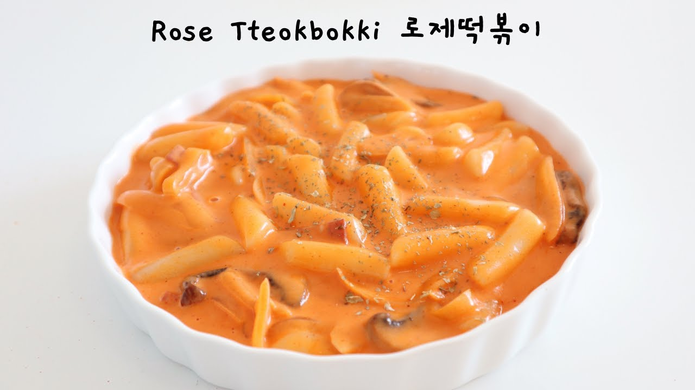

Rose Tteokbokki

The traditional Korean rice cake street food, known as Tteokbokki,
with a different flavor of rosé sauce!
Rosé sauce is made from a mixture of tomato sauce and cream,
creating a beautiful rose color!
Ingredients:
- 2 tbsp vegetable oil
- 1/2 medium onion
- 70g mushroom
- 2 slices bacon/ham
- 40g tomato paste
- 300ml water
- 100ml heavy cream
- 200g rice cake
- 2 tbsp parmesan cheese
- 2 cloves garlic, thinly sliced
Steps:
- Pour the vegetable oil into the pan and saute the mushrooms
until soft. Add in the onion, garlic, and bacon and saute
onions for 3 minutes, or until soft.
- Add in tomato paste and mix evenly. Add in water and mix
until even.
- Add in rice cakes and simmer until sauce thickens.
- Once the sauce begins to boil, add in heavy cream and mix.
- Season with salt, corn syrup, black pepper, and chili pepper.
- Mix in parmesean cheese and warm through.